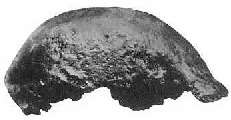
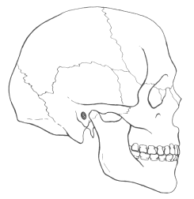
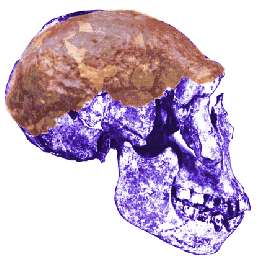

Java Man and Turkana Boy
The first photo is of the Java Man skullcap. Many creationists consider this an ape, including Gish, who says (Gish 1993):"Now we can see the skullcap is very apelike. Notice that it has no forehead, it's very flat, very typical of the ape. Notice the massive eyebrow ridges, very typical of the ape" ...and:"I would tend, quite strongly, to agree with Eugene Dubois and with Marcellin Boule that these creatures [Java Man and Peking Man] were giant primates of some kind."
"... it is very likely that Dubois' final assessment of his Pithecanthropus erectus may be the correct one - a very large primate of some kind within the generalized group called apes, possessing no genetic relationship to man whatsoever." (Gish 1995)



The second photo is of the skull of the Homo erectus specimen WT 15000 (the Turkana Boy). Gish (1985) accepts this as human, and suggests (incorrectly) that it was placed in Homo erectus, rather than H. sapiens, only because of its age of 1.6 million years. In a later book, Gish says:
"The size and shape of the braincase and a few other characteristics of the postcranial skeleton were the only exceptions when the skeleton of this young boy was compared to those for modern humans.""...the features of the Nariokotome juvenile were remarkably human with few exceptions." (Gish 1995)
The third picture is a drawing of a modern human skull.
Note that the skull of the Turkana Boy is quite different from a modern skull. To illustrate this, draw a line from the eyebrow ridge to the corner made by the lower jaw and the bottom of the skull. This divides the Turkana Boy's skull into two almost equal-sized parts. With the human skull, the upper part is much larger.
Note also that the Turkana Boy looks very similar to the Java Man skullcap. In fact, Gish's description of Java Man given above could equally well apply to the Turkana Boy. Java Man also has a brain size of 940 cc (far larger than any ape), compared to the estimated adult size of 910 cc for the Turkana Boy.
Here is another picture, showing both fossils overlaid:

References
Gish D.T. (1985): Evolution: the challenge of the fossil record, El Cajon, CA:Creation-Life Publishers, 1985.Gish D.T. (1993): The "missing links" are still missing (part 2). Science, Scripture and Salvation (ICR radio show) Sep 18, 1993.
Gish D.T. (1995). Evolution: the fossils still say no! El Cajon, CA: Institute for Creation Research. (an updated version of Gish 1985)
Related links
Creationist arguments about Java ManCreationist arguments about Homo erectus
Thanks to Brett Vickers for creating the composite picture above.
This page is part of the Fossil Hominids FAQ at the talk.origins Archive.
Home Page |
Species |
Fossils |
Creationism |
Reading |
References
Illustrations |
What's New |
Feedback |
Search |
Links |
Fiction
http://www.talkorigins.org/faqs/homs/java15000.html, 04/28/97
Copyright © Jim Foley
|| Email me